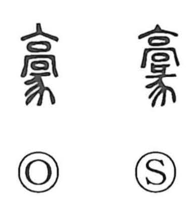

豪

Uncategorized
Kun: | On: go
powerful ・ magnate ・ grand ・ heroic
Explanation
A phono-semantic character: the top element is a shortened form of 高, which supplies the on-reading, while the lower part is 豕 (also written 彖), the long-haired boar-like animal. Early sources preserve this sense of a shaggy, formidable beast: the Shan Hai Jing speaks of white 豪 porcupines, and the Mu Tianzi Zhuan mentions 豪 cattle and 豪 sheep—evocations of sturdy, bristling creatures once typical of the western mountain belt. From this image, the meaning broadened to “strong” and was applied to people of exceptional prowess (as in 豪俊, 豪雄, 強豪), to imposing material things (豪荘), and to an expansive, hearty spirit (豪快).